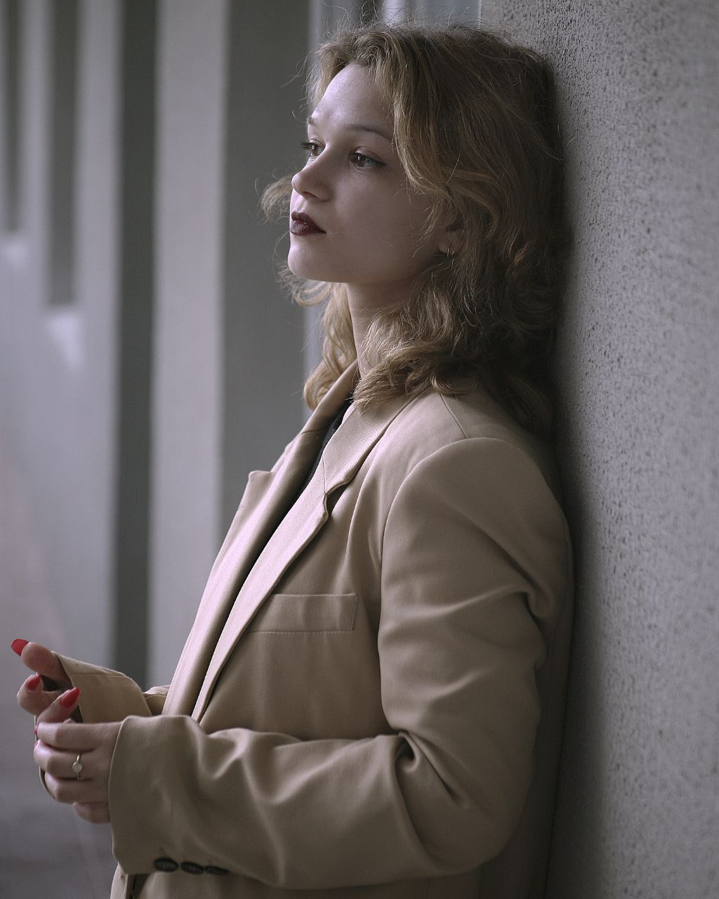

My name is Hanna Chyrak and I am an amateur photographer. I am from Belarus, but currently based in Lithuania, Klaipeda. I am already five years in photography and I love it, as through photoshoots people have an ability to see themselves from the other side. I have lots of cases when people actually started to love themselves more after seeing the photoshoots made by myself. I think it is beautiful to help people to awaken love to themselves through the photoshoots.